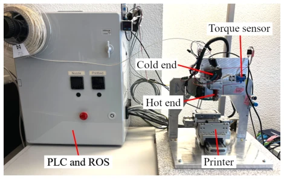
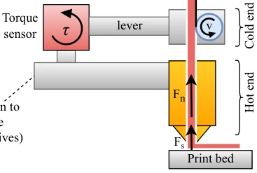
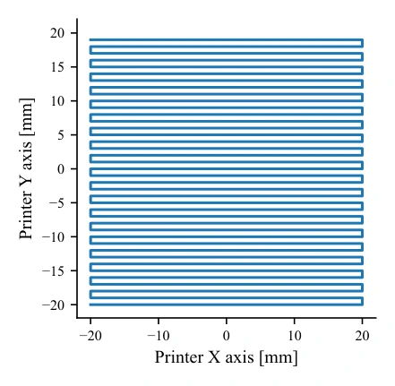
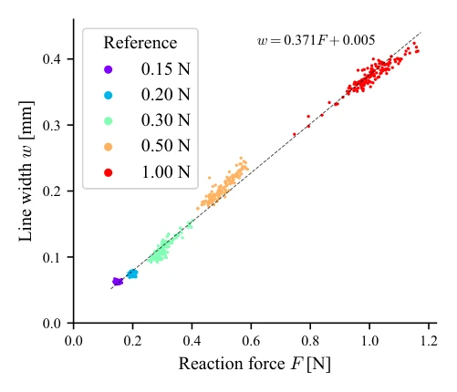
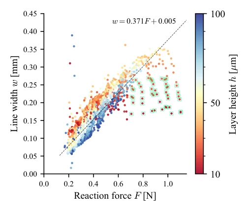
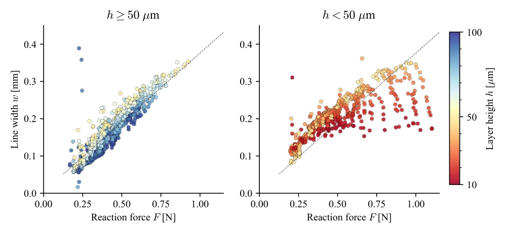
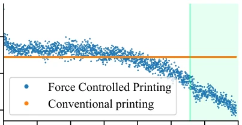
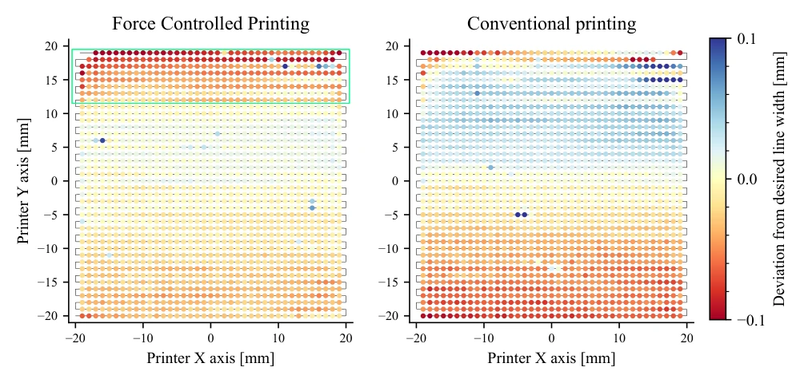
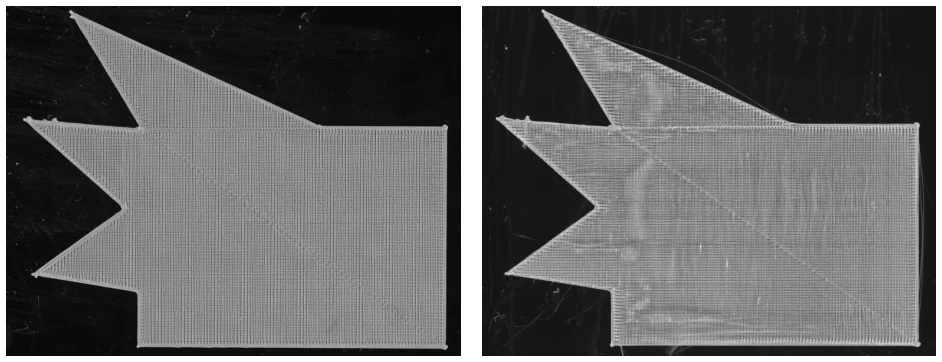
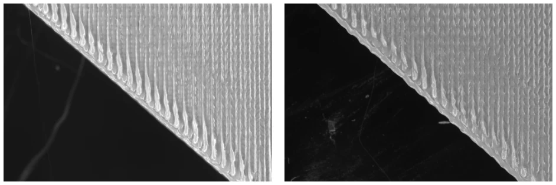

这篇论文试图给 FFF 打印加上“触觉”，利用扭矩传感器实时测量挤出力来实现闭环控制。虽然听起来像是给传统打印机装了个新大脑，但核心算法本质上是经典的 PID 控制，并未涉及深度学习或强化学习等前沿 AI 技术。其亮点在于实证了挤出力与线宽存在强线性关系，能有效抵抗床面不平和驱动轮打滑等扰动。然而缺点同样显著：硬件改造门槛高，且在小层高配合大线宽时线性关系会饱和失效。对于 Embodied AI 社区而言，这更像是一个硬核的工业控制案例，而非典型的感知决策模型，不过将力反馈引入增材制造确实为具身控制提供了新的物理交互视角，值得在力控策略上继续深挖。
This paper attempts to add "haptics" to FFF printing, utilizing torque sensors to measure extrusion force in real-time to achieve closed-loop control. Although it sounds like installing a new brain for traditional printers, the core algorithm is essentially classic PID control, without involving frontier AI technologies such as deep learning or reinforcement learning. Its highlight lies in empirically demonstrating a strong linear relationship between extrusion force and line width, effectively resisting disturbances such as bed unevenness and drive wheel slip. However, the disadvantages are equally significant: high threshold for hardware modification, and the linear relationship saturates and fails when small layer height is combined with large line width. For the Embodied AI community, this is more like a hardcore industrial control case, rather than a typical perception-decision model, however, introducing force feedback into additive manufacturing does provide a new physical interaction perspective for embodied control, worth further in-depth exploration in force control strategies.
Existing FFF printing mainly relies on slicer software for offline calculation of extrusion volume, belonging to open-loop feedforward control [13]. This scheme cannot adapt to external disturbances (such as bed unevenness) or material changes, and highly relies on modeling accuracy. Although there are many in-situ monitoring studies [14-20], most are used for inter-layer monitoring or anomaly detection, real-time closed-loop control progress is slow [21, 22]. Inter-layer methods have low sampling rates and cannot cope with rapid disturbances during the deposition process. In addition, traditional methods are sensitive to hardware parameter drift and difficult to guarantee long-term stability. Therefore, a method capable of real-time sensing of extrusion status and adjusting flow rate is needed, Force Controlled Printing (FCP) emerged accordingly, aiming to solve the rigidity problem of open-loop control through force feedback, improve print quality and robustness, and reduce dependency on complex modeling.

Figure 3: Custom-built FFF printer used for Force Controlled Printing
The overall process is: measuring extrusion reaction force in real-time through a custom torque sensor, as a feedback signal input to the controller to dynamically adjust the extruder wheel speed. Hardware-wise, the cold end is connected to the hot end via a lever and torque sensor, converting extrusion force into torque measurement [1]. The control algorithm adopts an improved PID, containing two derivative terms: one for fast motion system disturbances, and the other for slow extrusion system disturbances [3]. The controller adjusts extrusion speed based on the error between reference force and actual force, speed up if force is low, slow down if force is high. This method does not require a complex extrusion dynamics model, directly utilizing the linear relationship between force and line width for control, achieving real-time adjustment of the extrusion process. In addition, the system integrates via PLC and ROS2, ensuring the real-time nature of control commands and hardware synchronization, enabling the force control strategy to run stably in actual printing, without frequent recalibration.

Figure 1: Schematic representation of the sensing extruder. The torque sensor is used to characterize the extrusion process.
Experiments used LCP material, comparing FCP with traditional open-loop printing. First, the strong linear relationship between extrusion force and line width was verified (R2=0.99) [4]. Subsequently tested under inclined bed (layer height 10-100μm) and drive wheel slip scenarios. Results show that FCP can maintain stable line width when layer height changes, RMSE is significantly lower than open-loop [5, 7, 8]. In the slip experiment, FCP successfully compensated for material shortage, while open-loop had defects [9]. The limitation lies in the saturation of the force-width relationship at extremely small layer heights. In addition, the experiment also demonstrated the advantages of FCP in printing complex geometric shapes, with higher contour line accuracy and better surface quality [10], proving the effectiveness of this method in improving print quality.

Figure 4: Snake trajectory, used as a benchmark in this work. The trajectory is a continuous raster composed of 40 equally spaced 40 mm long lines

Figure 6: Measured line width and corresponding reaction force obtained in five separate experiments. In every experiment, a snake pattern

Figure 8: Results of the variable layer height study. Points coloring depends on the local layer height and corresponds to the color map used in Fig.

Figure 9: Results of the variable layer height study, separated based on the layer height. The left and right plots depict the measurements conducted

Figure 10: Comparison of line width, reaction force, and extruder speed for a conventional and a force-controlled print of the snake on a tilted bed.

Figure 11: Comparison of line width for a conventional and a force-controlled print of the snake on a tilted bed. The layer height is 100 µm at

Figure 12: Comparison of star prints with filament driving wheel slippage

Figure 13: Comparison of contour line accuracy in the star